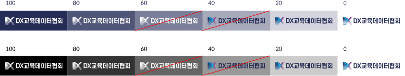
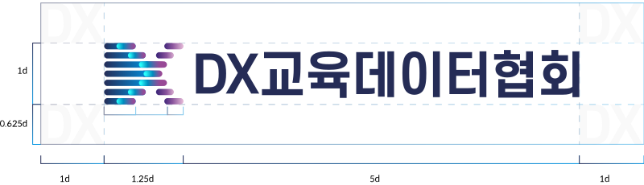

Digital Transformation for X(Everything) 미래교육을 위한 디지털 대전환을 이야기하다.
코로나 19 이후 디지털화 가속 및 데이터 축적을 통한 인공지능의 도입이 확산되고 있습니다. 인공지능의 진화는
교육 영역에도 혁신을 이끌어 내고 있으며, 이러한 미래교육 패러다임의 전환점에 맞추어 무엇을 배우고, 어떻게
가르쳐야 하는가에 대한 질문에 깊게 고민해야 하는 시점이 왔습니다.
이는 미래교육의 핵심 키워드인 ‘큐레이션(Curation)’으로 수많은 정보 가운데 학습자에게 필요한 콘텐츠를 선별
하여 제공하는 교육을 통해 누구도 소외되지 않는 개인별 맞춤형 교육을 받을 수 있는 것이 우리가 꿈꾸는 미래
교육의 현장일 것입니다.
DX교육데이터협회에서는 미래교육을 위한 디지털 대전환을 선도해 나가기 위해 17개 시도교육청, 교육관계기관
과 더불어 미래교육 지원체계 구축에 관심 있는 각 분야 전문가, 에듀테크 기업들과 함께 ‘미래교육 AI 포럼’을 시작
으로 미래교육에 대한 연구를 진행 할 예정입니다.
CI 소개
logo
미래교육의 대전환의 DX(Digital Transformation for X-Everything)를
심볼화하여 우리가 추구하는 미래교육의 혁신적인 이미지를 함축하여 시각화
하였습니다.
Color
Main Color
Future of X
Blue
Future of X Blue
디지털 대전환으로 미래를 위한 모든 것을
개척하는 에너지의 색상입니다.
Sub Color
Creation Blue
Creation Blue
새로운 미래교육을 향한 긍정적 의지를 담은
색상입니다.
Recombination Purple
Recombination Purple
지식요소의 재결합을 통해 새로운 가치를 만드는
미래교육을 상징하는 색상입니다.
배경 색상 적용 규정

Clear Space
로고 주변에 여백을 확보함으로써 로고가 복잡해 보이거나 헤드라인, 본문, 이미지 등의
요소와 지나치게 인접하여 혼잡해 보이는 것을 방지합니다. 언제나 최소 여백을 유지해
로고의 원형을 유지하고 가시성과 시각적 효과를 극대화하십시오.

Logo 적용시 반드시 공간규정에 따른 충분한 공간을 확보해야 합니다.
DX의 "D"의 높이를 기준으로 사방에 "D"높이 만큼의 최소 공간이 확보되어야 합니다.